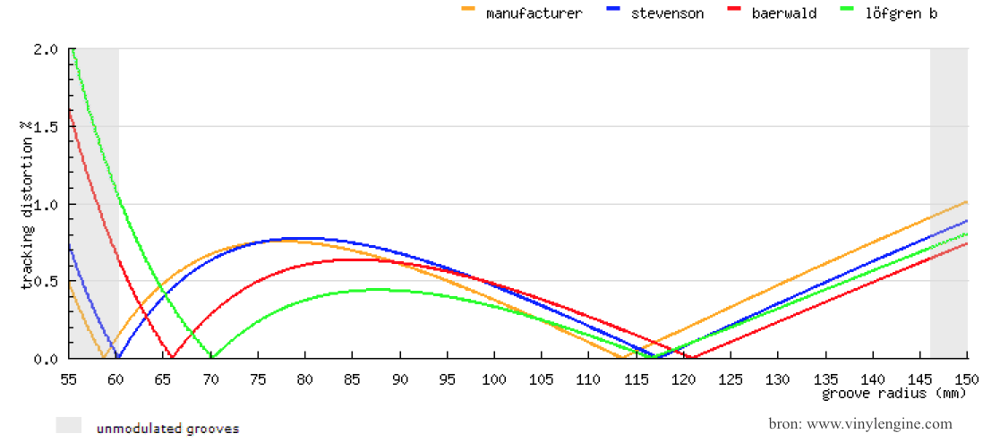
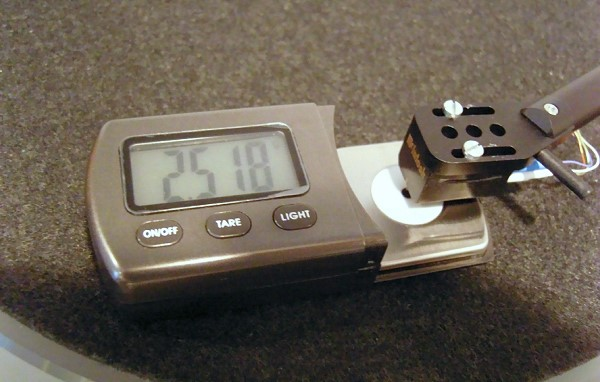
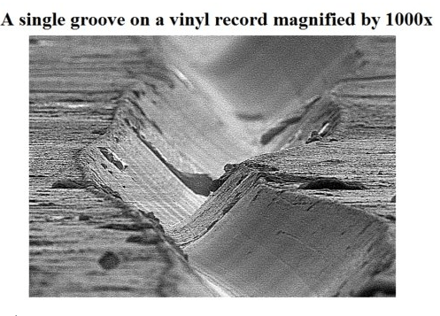

Factors Influencing Skating Strength
- The centrifugal force
- Friction of the needle in the groove
- The groove radius of the Lp
- Needle shape
- Tracking error
- Tracking force
- The modulation in the groove
- Compliance of the element
The centrifugal force
This is caused by the needle being set over the center of the record (the so-called "overhang"). This causes the needle to be "drawn in" by the rotational movement of the record.Friction of the needle in the groove
Friction of the needle with the groove wall creates a tangential force. The magnitude of this force depends on the tracking force and the coefficient of friction.The groove radius of the record
The Friction also depends on the radius of the slab. It has a minimum at about 3.5 ”and is higher on the inner and outer grooves. This will result in a higher skating force on both the inner and outer grooves.Needle shape
Research has shown that an elliptical needle shape creates more skating force than a spherical needle shape.
Tracking error
Since with a turntable arm the stylus makes a circular movement across the record, there is always an error angle that the stylus makes with the groove. This is because the die of the record is cut with a tangential arm and thus without an error angle. Partly for this reason, tangential tonearms have been developed that are precisely intended to be able to play without this error angle.But a tangential arm is difficult to make and causes other problems that are not easy to solve. Especially the resonance problem of these tonearms is a difficult factor to control.

Tracking force
The set tracking force has an effect on the skating force. The higher the tracking force, the more skating force is generated. The Wally Skater that I discuss further on uses this to set the correct anti skate value.
The modulation in the groove
The amount of information in the groove partly determines the skating force. In other words, with high modulation and thus a lot of music information such as large orchestras, big bands, heavy rock, etc., relatively much skating power is generated. Quiet pieces of music, small ensembles or a light guitar piece, on the other hand, generate much less skating power. Dirt and nicotine attack or dust also provides "information" and therefore has a direct effect on the skating force.
Compliance of the cartridge
The energy absorbed by the movement of the needle and cantilever suspension influences the skating force. The higher the compliance and thus the lower the suspension stiffness, the lower the skating force.It is greatest at low frequencies where the lateral force on the stylus are greatest and increases towards the center of the record. This force can vary with different elements and even between elements of the same type and brand.
It is best to use a high-compliance stylus with a low-mass arm, and a low-compliance stylus with a high-mass arm. If you try to use a low-compliance stylus with a low-mass arm, the cantilever's suspension won't fully absorb the low-frequency (bass) vibrations from the groove and will partially transmit these vibrations to the arm (causing the arm to move), resulting in a bass-light sound.